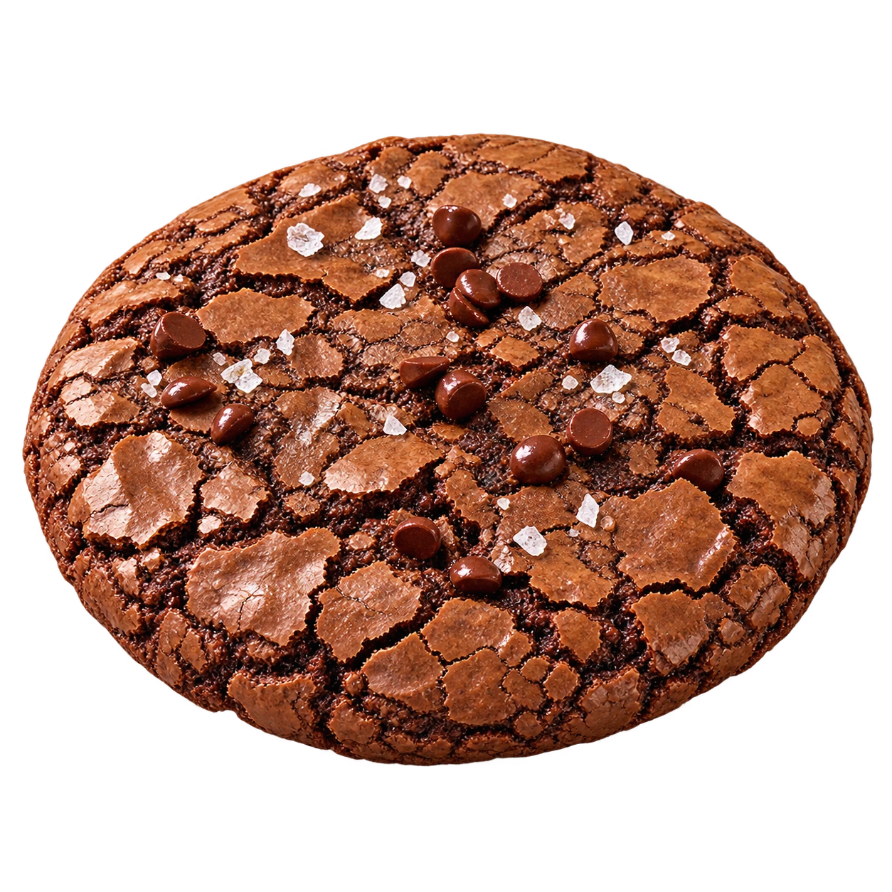

Schuif gezellig aan
Sluit je aan bij onze WhatsApp-groep.
HOMEMADE MACARONS & SWEETS.
MET EEN EIGEN KARAKTER.
Van verfijnde macarons tot brownies, koekjes en cupcakes.
Met de hand gemaakt, voor jouw zoete zonde.


Franse vanillebotercrème. Een kleine karamelkern.
Gebrand met vanillesuiker.


Van een vertrouwde klassieker tot je favoriete dessert.
Kies een macaron en ontdek wat erin schuilt.
Het aanbod wisselt per bakronde.
MEER DAN EEN MOOIE BUITENKANT
Bekijk de macaron, ontdek de vulling en draai hem rond.
Beschikbaarheid en bestelinformatie vind je bij de volgende bakronde.
Naast onze macarons bakken we ook brownies, Salted Brownie Cookies, pecan pie, koekjes en cupcakes. Ontdek jouw volgende favoriet.
 Chocolade
ChocoladeVan kleine bites tot grote vierkanten.
Ontdek
ZeezoutRijke chocolade. Een vleugje zeezout.
Ontdek Pecan
PecanZandkoekbodem. Kleverige pecanlaag.
Ontdek Cookies
CookiesVerschillende vormen. Ook custom shapes op aanvraag.
Ontdek Cupcakes
CupcakesEen zachte cake. Een feestelijke toef.
OntdekHet aanbod en de uitvoeringen wisselen per bakronde.


KLEINE VERWENNERIJEN
Kies een sweet en ontdek de uitvoering.

Homemade sweet
Chocoladegebak met een karakteristieke gebarsten bovenkant. In kleine bites voor een gemengde doos of als groter vierkant voor een uitgebreid zoet moment.
Deze wil ik proevenOntdek de beschikbare formaten en uitvoeringen bij de volgende bakronde.
 Verschillende favorieten, samen in één doos.
Verschillende favorieten, samen in één doos.EEN BEETJE VAN ALLES
Macarons, brownies en pecan pie vormen samen een heerlijk gevarieerde doos. De kleine gebakjes zitten in hun eigen papiertje, mooi tussen de macarons.
Om te delen, cadeau te geven of zelf van te genieten. De samenstelling volgt het aanbod van de bakronde.
Ontdek de volgende bakronde
AANDACHT IN ELKE LAAG
Het verschil zit
in de details.
 Uit onze kleine thuisbakkerij.
Uit onze kleine thuisbakkerij.Het atelier van Kiss My Cookie
Bij Kiss My Cookie draait het om macarons en sweets waar je even voor gaat zitten. Met de hand gemaakt, in kleine bakrondes en met aandacht voor wat elke hap bijzonder maakt.
Verfijnd van buiten, vol karakter van binnen.
En altijd met onze eigen, speelse knipoog.


JE VOLGENDE ZOETE MOMENT
Onze bakrondes delen we via WhatsApp.
Daar ontdek je het menu, de prijzen en hoe je bestelt.
Sluit je aan bij onze WhatsApp-groep.
Ontdek de macarons en sweets van de volgende bakronde.
Volg de bestelinformatie en praktische afspraken in de groep.
GOED OM TE WETEN
In onze WhatsApp-groep vind je het aanbod en de bestelinformatie voor elke bakronde.
We werken met wisselende bakrondes. De collectie geeft een indruk van onze smaken; in de WhatsApp-groep vind je het actuele aanbod.
Prijzen en praktische afspraken over afhalen staan bij de betreffende bakronde in de WhatsApp-groep.
Vraag vóór je bestelt naar de ingrediënten en allergenen van jouw gekozen smaak en bespreek je allergie rechtstreeks met de bakkerij. De interactieve voorstellingen zijn geen volledige ingrediëntenweergave.